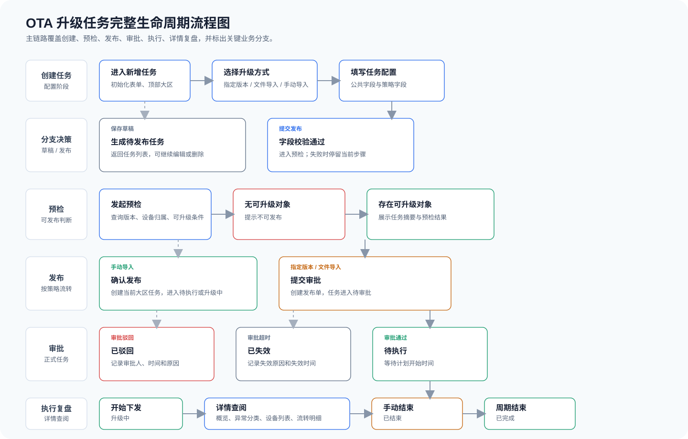
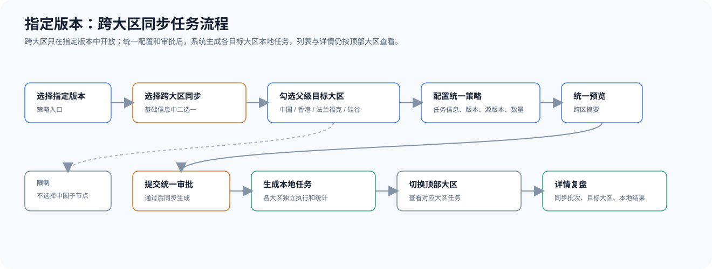
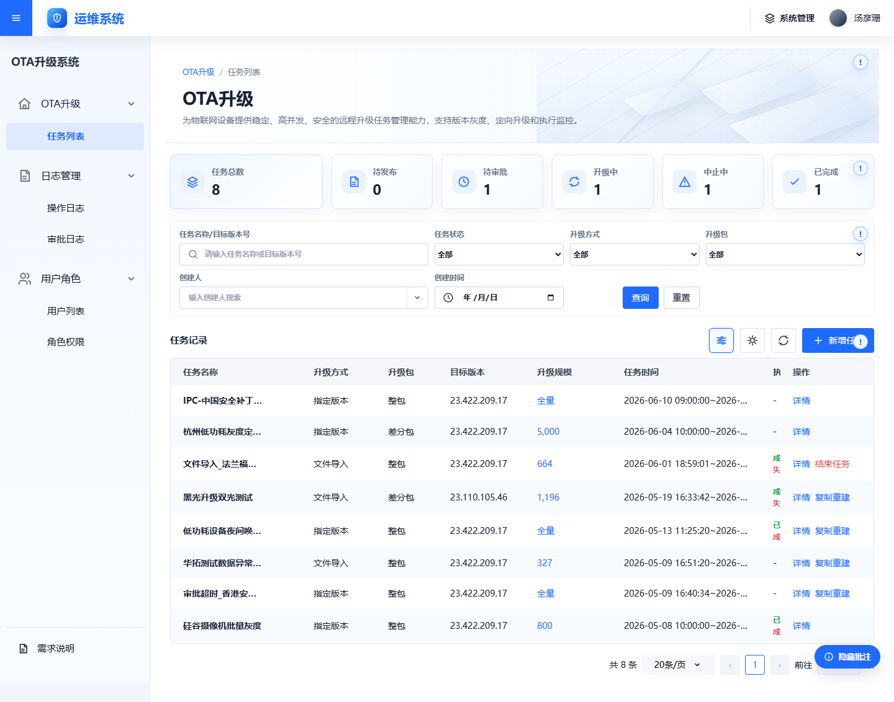

设备多，人工升级难以规模化
设备分布在不同区域和产品线，依赖现场操作或重复沟通，升级效率和一致性难以保障。
当设备数量、产品线和区域持续增长，升级不再是一次人工操作，而是一个需要被治理的业务过程。
设备分布在不同区域和产品线，依赖现场操作或重复沟通，升级效率和一致性难以保障。
围绕目标版本、设备范围、升级策略和执行窗口，形成统一的任务对象和状态体系。
围绕同一个任务 ID 连接版本、设备、执行状态和结果信息，让各参与方基于同一事实协作。
用一个任务 ID 把固件、策略、审批、设备和结果串起来，先建立整体画面，再进入页面细节。
呈现任务从草稿、审批、执行到完成、结束、驳回和失效的状态关系。

系统把“能不能升级”延展为“为什么升级、影响谁、谁确认、执行到哪、结果如何”的完整链路。
多大区任务一次配置，固定清单按设备所属大区自动分发，减少切换区域、重复建任务和人工汇总。
通过指定范围、源版本、灰度批次、任务上限和审批机制，把大规模升级拆成可确认、可控制的步骤。
任务状态、审批记录、设备结果、异常原因和分区明细形成可追溯记录，支持问题定位和后续决策。
| 关注维度 | 一次下发方式 | OTA任务化管理 |
|---|---|---|
| 升级范围 | 重点关注文件或指令是否发出 | 按版本、分发范围或设备清单明确目标对象 |
| 风险控制 | 通常需要结合其他方式控制执行节奏 | 发布前预检，执行中按批次和上限控制影响面 |
| 跨部门协作 | 需要通过多个记录协同 | 围绕同一任务 ID 共享目标、状态和结果 |
| 结果复盘 | 结果通常需要额外整理 | 按状态、分发范围、设备和异常原因查看 |
产品围绕一次升级任务提供范围控制、风险控制、执行监控和结果追踪。
支持指定版本、文件导入和手动导入，分别应对动态匹配、固定清单和少量定向设备。
通过目标版本、升级包、时间窗口、预检结果、审批和批次上限控制升级风险。
任务状态、设备状态、成功率、失败原因和分区结果，为运营、测试、研发和客服提供同一事实来源。
保留任务流转、操作记录、设备明细和异常分类，支持问题追踪、版本评估和后续决策。
创建时选择指定分发范围、源版本和全量 / 批量规则。批量模式可设置单批下发数量和任务最大下发数量。
任务提交后进入待审批；详情按当前分发范围拆分执行结果。
上传 CSV / Excel 后进行格式、重复、设备有效性和可升级性预检。创建时不选择大区，由后端按设备所属大区自动分发。
重点关注原始文件、去重后数量、可升级数量和异常设备。
手动录入设备 ID，校验设备状态和当前版本后发布。创建时不选择大区，详情展示设备所属大区。
适合测试验证或小范围问题修复，需控制录入数量和设备清单准确性。
三种方式分别对应动态范围、固定清单和少量设备。
所有升级方式最终都要回答五个问题：升级什么、影响谁、谁确认、执行到哪、结果如何。
| 参与角色 | 主要关注 | 协作结果 |
|---|---|---|
| 产品 / 运营 | 升级目的、范围、时间和风险 | 任务目标清晰 |
| 研发 | 版本包、设备能力和执行链路 | 版本条件可执行 |
| 测试 | 预检、灰度结果和异常分类 | 结果可验证 |
| 客服 | 用户反馈、设备信息和任务状态 | 问题可追踪 |
一个指定版本任务可以选择多个分发范围，系统分别记录各范围的执行结果，详情页再按当前范围进行复盘。
呈现多分发范围任务的拆分执行方式，以及详情页按范围复盘结果的关系。

场景的差异在于目标设备如何确定、执行节奏如何控制，以及结果如何被追踪。
经销商用户故事“我负责多个区域的设备运营，同一目标版本要覆盖杭州低功耗与香港的客户设备，但不同区域需要分别观察上线节奏。我希望一次提交升级任务，同时保留分区结果。”
方案：指定分发范围、源版本、批次和任务上限；提交审批后按范围执行。
价值：一次配置多范围，按批次控制影响，按分区复盘结果。
经销商用户故事“我负责售后问题处理，已经根据客户反馈整理出一份明确的设备 ID 清单，需要集中修复这些问题设备。我希望直接导入清单，不再手动拆分区域或重复核对设备。”
方案：文件导入，系统完成去重、预检并按设备所属大区自动分发。
价值：减少清单整理和区域拆分，异常设备在发布前被识别和保留。
经销商用户故事“我在现场支持客户，需要先在少量设备上验证补丁是否解决问题，再决定是否扩大范围。我希望直接指定设备并尽快得到结果，同时保留验证记录。”
方案：手动导入设备 ID，校验当前版本和可升级状态后直接发布。
价值：缩短验证路径，同时保留设备结果和异常信息。
无论从哪种方式开始，都要经过任务配置、预检或审批、设备执行、状态跟踪和结果复盘，最终形成统一的任务记录。
通过产品界面了解一次升级任务如何被创建、配置、执行和追踪。

先明确任务名称、目标版本和执行时间，为后续升级方式配置提供基础信息。
基础信息统一后，后续参与方可以基于同一任务了解升级目标和执行窗口。
不同角色承担不同责任，共享任务、设备、版本和结果信息。
明确升级目的、范围、风险和结果口径，推动各参与方围绕同一目标协作。
关注固件包、设备能力、服务边界、任务状态和结果回写，反馈问题时说明实际执行节点。
覆盖创建校验、审批流转、分发范围、执行结果、失败原因和详情复盘，保留可复现的任务与设备信息。
选择合适升级方式，确认源版本、分发范围、批次节奏和时间窗口，发布前重点阅读预检结果。
收集任务 ID、设备 ID、当前版本、目标版本、页面状态、失败提示和发生时间，避免只描述“升级失败”。
所有参与方共享任务、设备、版本和状态信息，让目标、执行过程和最终结果保持一致。
各角色围绕同一个任务 ID 共享目标、状态和结果，形成连续的协作链路。
通过统一的任务、设备、版本和状态信息，缩短问题定位与协作路径。
先检查必填项、目标版本、升级包状态、时间窗口、分发范围和可升级设备数量。
查看任务详情中的设备状态、失败原因、最近上报时间和当前所属大区，确认是设备、网络、固件还是任务链路问题。
记录任务路径、当前状态、升级方式和版本，结合任务详情与执行结果进行判断。
| 定位信息 | 示例 | 帮助定位 |
|---|---|---|
| 任务信息 | 任务 ID、升级方式、当前状态 | 确认任务处于哪个阶段 |
| 设备信息 | 设备 ID、源版本、目标版本、所属范围 | 定位单设备与执行范围 |
| 现象与时间 | 页面提示、失败原因、发生时间 | 判断问题影响与持续情况 |
| 结果证据 | 任务详情、设备明细或相关截图 | 支持跨团队共同判断 |
围绕升级方式、分发范围、状态含义和结果追踪整理常见疑问。
指定版本按分发范围、源版本和策略条件动态匹配；文件导入基于固定设备清单；手动导入适合少量、临时、定向设备。三者对大区选择、审批流转和详情复盘口径不同。
新版规则中，这两种方式基于明确设备 ID，后端按设备所属大区自动分发；大区信息用于详情和复盘展示，不作为创建时的全局上下文。
不代表。审批通过只说明任务进入允许执行的状态；设备是否升级成功，要在执行结果、设备明细和异常分类中确认。
至少补充任务 ID、设备 ID、源版本、目标版本、任务状态、失败原因、发生时间和可复现步骤。必要时附上任务详情截图或导出明细。
从目标、策略、预检、执行到结果，所有参与方围绕同一条升级链路协作。
OTA 系统将固件、任务、设备、审批、执行和结果连接起来，让远程升级过程可配置、可追踪、可复盘。
不同角色共享任务 ID、设备信息、版本信息和状态结果，让升级目标、执行过程和最终结果保持一致。